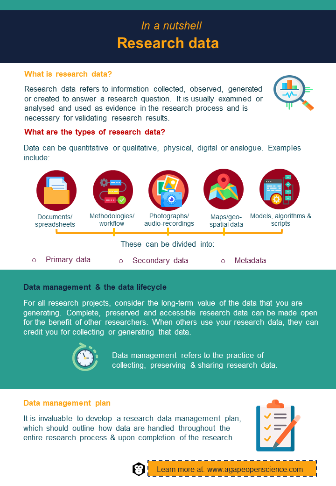

Chapter 5 Research data
Research data are a fundamental part of the research process and open science.
But what is research data?
The University College Dublin (UCD) Research Data Management Policy defines research data as “information collected to be examined and considered and to serve as a basis for reasoning, discussion or calculation. It is used as a primary source to support technical or scientific enquiry, research, scholarship or artistic activity, is used as evidence in the research process and/or is commonly accepted in the research community as necessary to validate research findings and results.”
Research data exists in a specific research context and provides evidence or validation to claims and findings relevant to a specific research question. Data can be quantitative or qualitative and in physical, digital or analogue format. Quantitative data are measures of quantity and are recorded as numbers. In the research community, there are widely accepted standard units that allow specific quantities to be expressed in ways that are unambiguous and universally understandable. Qualitative data carries information about quality and do not take the form of numbers. Physical data refers to samples and specimens.
Examples of research data:
- Documents, spreadsheets and notes.
- Laboratory notebooks and field notebooks.
- Laboratory protocols, methodologies and workflows.
- Questionnaires, surveys, interviews, transcripts, codebooks and test responses.
- Standard operating procedures and protocols.
- Photographs, films, digital images, audiotapes and videotapes.
- Protein or genetic sequences.
- Spectral data.
- Slides, artefacts, specimens and samples.
- Maps and geo-spatial data.
- Collection of digital objects acquired and generated during the process of research and results of computer simulations.
- Database contents (video, audio, text and images).
- Models, algorithms and scripts.
- Contents of an application (input, output, log files for analysis software, simulation software and schemas).
Research data can be categorised as:
Observational – data captured in real time, usually unique and irreplaceable. It is collected using methods such as human observation, open-ended surveys or through the use of an instrument or sensor to monitor and record information. E.g., weather data, noise level and recordings.
Experimental – data collected through experiments or clinical trials by the researcher to measure change or to create differences when a variable is altered. It helps to determine a causal relationship and is typically projectable to a larger population. This type of data is often reproducible, but it can be expensive to do so. E.g., sequencing data and quantitative data recorded with laboratory equipment.
Simulation – data generated using computer test models that try to determine what would happen under certain conditions. The test model and metadata can be more important than the output. E.g., climate predictions, economic models and chemical reactions.
Derived or compiled – data originating from processing or combining existing data points, often from different data sources. It can be replaced if lost, but this can be very time-consuming and/or expensive. Typically used in secondary research. E.g., databases and population statistics.
Reference or canonical – collection of smaller datasets, usually published and curated. E.g., IUCN Red List of Threatened Species and NASA Earth science data.
Next, we can divide data into primary and secondary. Primary data are collected or generated first-hand to answer a specific research question. Secondary data refers to existing data that is being reused for a purpose other than the one it was collected for. It tends to be readily available, include large samples and be collected over a long period of time. Nowadays, high quality research and publications can be made using only secondary data. Thanks to open science, sharing and access to data utilising this approach is becoming more popular. It can be, and often is, more cost-effective than primary research. One potential drawback of secondary research is a lack of control over the research question, the data collected and the methods used. The potential strengths and benefits of secondary research do not undermine the importance of primary data collected in well-designed experiments and studies that are necessary for improving our knowledge and understanding of the world around us.
Metadata is another important type of data. It is often referred to as data that provides information, background or context information about other data. Put simply, metadata is data about data. In other words, metadata is structured reference data that helps to sort and identify attributes of the information it describes. Examples of metadata are author, type of data, file size, the date the document was created, HTML tags, geolocation, environmental conditions affecting the main variable and instruments used to collect or generate data. You can learn more about metadata in the chapter “FAIR principles”.
Other types of data exist that are not commonly shared because of the nature of the records themselves or because of ethical and privacy concerns. E.g., preliminary analysis results, drafts of scientific papers, peer reviews, communication with colleagues or stakeholders. Research data also does not include trade secrets, commercial information, materials necessary to be held confidential by a researcher until data are published or similar information which is protected under law. Personal and medical information that could be used to identify a particular person or culturally sensitive data are special types of data that come under specific legislation. In the EU the relevant regulation is the General Data Protection Regulation (GDPR).
5.1 Research data life cycle
When working on your research, you are very much focused on your project carrying out the necessary practical tasks. The challenge is to also think about data management. It is in your best interest due to the long-term value of data you might be generating. You want to make sure that at the end of your research not only your data, but also metadata and documentation are complete, preserved and made accessible so that other people can use it and that you get credit for all the hard work you put into collecting or generating that data.
Data management is the practice of collecting, preserving and sharing research data. Data management continues beyond the duration of a specific research project and covers all aspects of curating and caring for data. Different activities and stages of this process that can be schematised in the research data lifecycle model include:
Planning – The first step is identifying data to be collected or generated in your research. It should include the nature, scope and scale of data. Resources and costs associated with data collection should be identified. This will depend on which methodologies or software will be used if new data are collected or produced. Data preservation should be planned before data are collected or generated.
Collecting or generating data – For your research you can use either primary or secondary data. In the case of primary data, you are collecting, generating, storing and organising data and metadata. If you are reusing data made accessible by someone else, these are referred to as secondary data.
Processing data – Processing means converting raw data to formats suitable for analysis or generating new variables. Necessary steps are also cleaning and standardising data and applying quality controls. All steps of data processing activities, including scripts and outputs, should be documented.
Analysing data – Essential parts of your research are data analysis and interpretation. Statistical analysis, computational analysis and data visualisation are used to produce research outputs. All these steps must be reproducible. Therefore, it is important to document all steps of this process.
Preserving data – Data of long-term value should be preserved and made available for others to reuse. This involves selecting data for preservation, converting data to other formats, creating supporting documentation and depositing data in data centres, data repositories or institutional data repositories for preservation. It is important to plan data preservation from the very beginning of the research project in order to collect all necessary metadata.
Making data accessible – Creating online metadata records for data in a data centre/repository, obtaining a unique persistent identifier for data, licensing data for reuse, enabling access to data via a data centre/repository and citing and linking to data and code from research outputs all fall under making data accrssible.
Re-using data – For your research, you can use secondary data collected and made accessible by other researchers. Similarly, your primary data can be used as secondary data. It can be used by other researchers or by you to conduct secondary analysis or follow-up research, by policymakers to inform evidence-based policymaking or used by the scientific community in communication and engagement with the general public, industry, private sector and media.
5.2 Data management plan
Developing a data management plan (DMP) can be invaluable to your research by ensuring efficient research data management and sharing. A DMP is a document that outlines how data are handled throughout the entire research process and once it is completed. It should consider all aspects of the research data lifecycle. A DMP should be produced before you start working on your research project and you should continually update and edit it when needed. A DMP is not a static but living document. It is okay if you can’t answer all the questions at the beginning. Although it requires time to create your DMP and to keep it updated, in the long-term it saves a lot of time and effort. Also, public funding bodies often require at least an outline of a DMP. It is good to know that requirements for a DMP differ between various institutions and funding bodies. In general, it may provide information to answer the following questions:
What is the nature of your research and your scientific hypothesis? What questions are you trying to answer?
Who has what roles and responsibilities? Do you have any special requirements for hardware and software?
How are you planning to generate or collect data? If working with physical samples, how will these be labelled and what system of unique identifiers will be used? If working with people or animals, how will ethical issues be handled?
How will these data be processed?
What quality assurance checks will be carried out and how will you deal with problems, missing values and errors, if found?
How will data be stored and shared during the project (permission levels, version control and backups) and once it is completed (archiving)? How will intellectual property rights be handled?
Although not addressed in a DMP, other types of documents and records should be managed during and beyond the life of a project. E.g., correspondence (e-mail and paper-based), project files, grant and ethics applications and approvals, signed consent forms, research reports, technical reports, project reports and files and master lists.
5.3 Data access
Data can be stored in data centres or repositories. Sometimes, your university or institution might require you to store your data in its repositories. Make sure to familiarise yourself with policies and requirements when planning your research. You can learn more about Data centres and repositories in the chapter “Data repositories and data centres”.
Not all data uploaded into data centres or repositories are necessarily accessible to everyone. Whether there are concerns that releasing some data can have negative consequences or you just need more time to publish results of analysis using those data, special restrictions can be applied on how others gain access to your data. Depending on the repository, access can be classified, for example, as:
Fully open access – Open data has no restrictions on access. Anyone can view and download it. This makes it more likely to be reused, for others to verify the results of your research and for you to get credit for generating and publishing that data.
Embargoed access – Embargoed data are made available within a specific period of time. Until then, only metadata is made public. At the end of the embargo period, data will become available by either open or mediated access, depending on the option that you’ve selected. This should give you enough time to publish your findings or to register a patent.
Mediated access – Although metadata is made public, for someone to access your data you must approve an application that should meet conditions you have outlined. This may include requesting proof that a person asking for access to your data is a genuine researcher and that they have ethical approval from their own institution to undertake the research.
Restricted access – Metadata are made public, but the full access is granted only to registered users.
Closed access – Metadata is published, but data is inaccessible and there is no process in place to apply for access to it. This type of access is rarely used. Examples include a case when you worked on generating data, but you don’t have the right to publish it. Alternatively, it might be classified as military research or another type of sensitive data.
Depositor access – Data can be accessed solely by depositors.
To access data, various types of user agreements exist. The most common type is an open content licence, such as a Creative Commons (CC) or general public licence. You can learn more about different types of licences in the chapter “Open-source, open licensing, scientific programming”.
5.4 What exactly is open research data?
According to the European Commission, “open research data refers to data underpinning scientific research results that has no restrictions on its access, enabling anyone to access it.”
Making your data open brings a lot of advantages to you, as well as to the whole scientific community. It reduces cost and saves time for the government or private sector when reusing your data for further understanding and knowledge or for other researchers when they don’t have to collect the same data again. Many collaborations with other scientists are born this way. By opening your research, you are making it not only more visible but also transparent and you are potentially increasing its impact. Your work can get potential recognition by the general public and in the scientific community. This also encourages scientific enquiry, debate and improvement and validation of research methods. It is possible that others identify errors in your data or methods. This gives you an opportunity to learn from your mistakes and grow as a scientist.
In fact, research integrity is an essential driver of reliable and trustworthy research and scientific discovery. A fundamental principle of the scientific method is reproducibility. The most often used reasons for not meeting the criteria of reproducibility, also known as replicability or repeatability, are: pressure to publish, poor statistical analysis leading to conclusions not supported by results, poor reliability of results, selective reporting and lack of replication within the original environment. Environmental observations and measurements are unique. That is why choosing correct methods and tools and interpretation of results are important in this type of research. On the other side of the spectrum is experimental research which is repeatable by nature. Whether your research is observational or experimental, good data management helps to support your own research integrity, as well as the validity and reproducibility of your research.
It is your responsibility as a researcher along with all other individuals involved in the research process to manage your data well and to make them open. Whether you’ve already generated data for your research project or are only planning how to do it, it’s never too early (or too late) to start considering how to make your data open. Do not forget that you don’t own data you collect or generate when working on your research project. Make sure to familiarise yourself with institutional policies and confirm with your PI/supervisor prior to making your research data open. You can learn more about research ethics in the chapter “Open science policy, scientific integrity and ethics”.
To make data open is not enough. It must also be FAIR.

5.5 Test your understanding
Activities
In a recommend activities section like this one, we will recommend the activities to increase your understanding of the concepts and improve your practical knowledge.
Create metadata for one of your data files. Metadata standards used in different scientific disciplines, including specifications and various tools, can be found on the Digital Curation Centre website. Other useful schemas with overall structure of metadata are available on the UNC University Libraries website. Pick one that is the closest to your research and give it a go.
Fill in a DMP template. You can do it online at DMPonline after creating an account or you can download one from the EC Horizon 2020 research and innovation funding programme or the University of Michigan Library.
Check out a free online MANTRA course from the University of Edinburgh that was created for those who manage digital data as part of their research project.
Check out the free Data Tree research data management course from NERC.
Do you have your data management plan? Or have you found during your research that your data could be managed better and with much less effort should you have had the relevant information when starting your project? Share your experience with others on our social media.